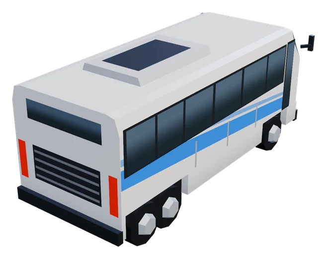
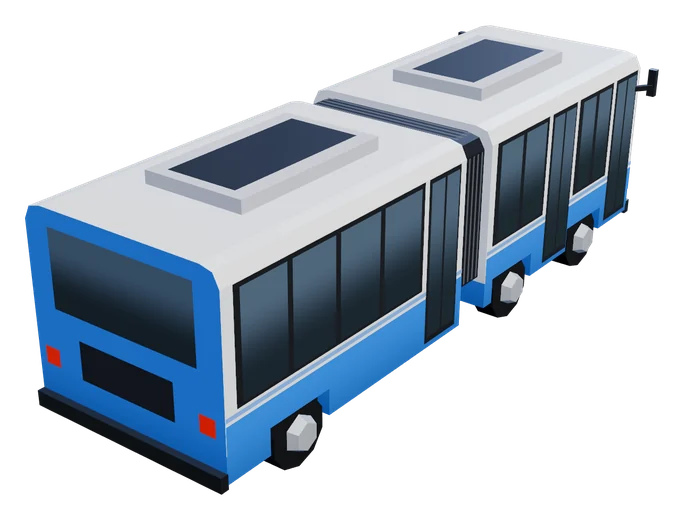
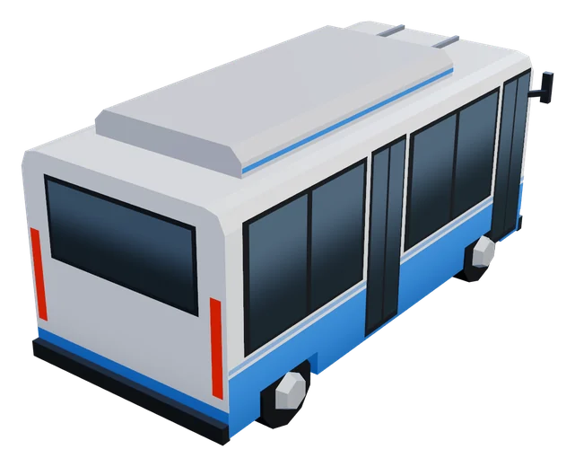
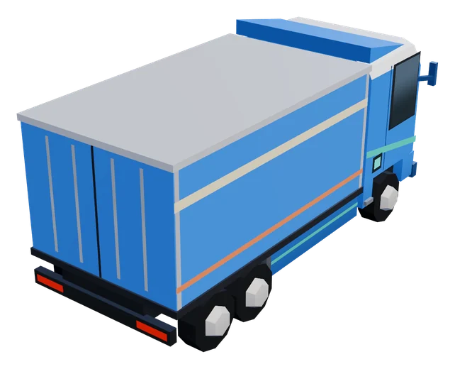

Road vehicles
Every bus and truck.
Buses carry passengers; trucks carry freight. Both use your roads and the towns' streets.
 Comet City Bus1950 · 90 km/h
Comet City Bus1950 · 90 km/h Atlas Hauler1950 · 90 km/h
Atlas Hauler1950 · 90 km/h Comet Double-Decker1956 · 84 km/h
Comet Double-Decker1956 · 84 km/h Atlas Hauler Mk II1964 · 117 km/h
Atlas Hauler Mk II1964 · 117 km/h
Comet Coach1968 · 120 km/h
Comet Articulated1980 · 108 km/h Atlas Hauler Mk III1986 · 138 km/h
Atlas Hauler Mk III1986 · 138 km/h Titan Road Train1994 · 108 km/h
Titan Road Train1994 · 108 km/h Atlas Car Transporter1995 · 132 km/h
Atlas Car Transporter1995 · 132 km/h
Volt Electric Bus2010 · 129 km/h
Volt Electric Truck2016 · 126 km/h
| Model | From | Carries | Capacity | Speed | Price | To run, a year |
|---|---|---|---|---|---|---|
| Comet City Bus | 1950 | Passengers | 28 | 90 km/h | $11,000 | $1,200 |
| Atlas Hauler | 1950 | Any freight | 22 | 90 km/h | $13,000 | $1,500 |
| Comet Double-Decker | 1956 | Passengers | 52 | 84 km/h | $16,000 | $1,500 |
| Atlas Hauler Mk II | 1964 | Any freight | 28 | 117 km/h | $19,000 | $1,800 |
| Comet Coach | 1968 | Passengers | 38 | 120 km/h | $17,000 | $1,600 |
| Comet Articulated | 1980 | Passengers | 64 | 108 km/h | $24,000 | $2,100 |
| Atlas Hauler Mk III | 1986 | Any freight | 34 | 138 km/h | $27,000 | $2,100 |
| Titan Road Train | 1994 | Any freight | 52 | 108 km/h | $38,000 | $3,000 |
| Atlas Car Transporter | 1995 | Cars | 10 | 132 km/h | $30,000 | $2,300 |
| Volt Electric Bus | 2010 | Passengers | 40 | 129 km/h | $26,000 | $800 |
| Volt Electric Truck | 2016 | Any freight | 30 | 126 km/h | $31,000 | $900 |
- Any freight is every cargo except passengers, cars. Any bulk cargo also leaves out mail, newspapers.
- A working life is 15 years for this kind: see Ageing & renewal.